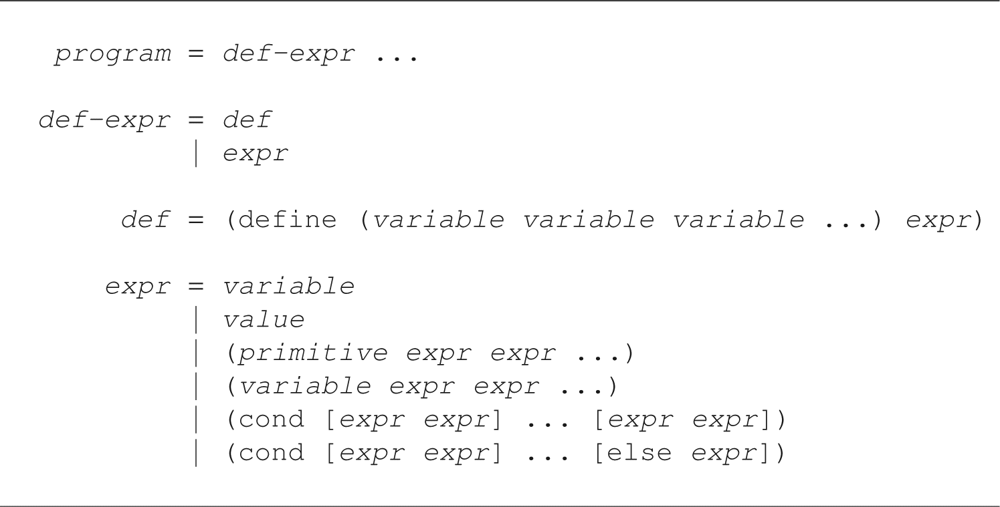
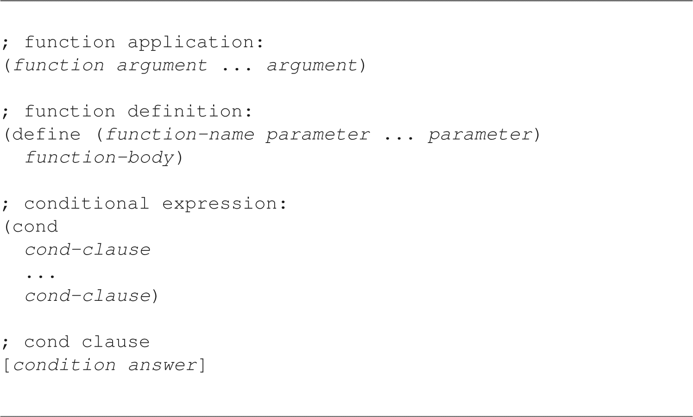

BSL Grammar
Figure 40 shows a large part of the BSL grammar, which—in comparison to other languages—is extremely simple. As to BSL’s expressive power, don’t let the looks deceive you. The first action item, though, is to discuss how to read such grammars. Each line with a = introduces a syntactic category; the best way to pronounce = is as “is one of” and | as “or.” Wherever you see three dots, imagine as many repetitions of what precedes the dots as you wish. This means, for example, that a program is either nothing or a single occurrence of def-expr or a sequence of two of them, or three, four, five, or however many. Since this example is not particularly illuminating, let’s look at the second syntactic category. It says that def is either
Reading a grammar aloud makes it sound like a data definition. One could indeed use grammars to write down many of our data definitions.
(define (variable variable) expr)
because “as many as you wish” includes zero, or
(define (variable variable variable) expr)
which is one repetition, or
(define (variable variable variable variable) expr)
which uses two.

Figure 40: BSL core grammar
The final point about grammars concerns the three “words” that come in a distinct font: define, cond, and else. According to the definition of BSL vocabulary, these three words are names. What the vocabulary definition does not tell us is that these names have a pre-defined meaning. In BSL, these words serve as markers that differentiate some compound sentences from others, and in acknowledgment of their role, such words are called keywords.
Now we are ready to state the purpose of a grammar. The grammar of a programming language dictates how to form sentences from the vocabulary of the grammar. Some sentences are just elements of vocabulary. For example, according to figure 40 42 is a sentence of BSL:
• The first syntactic category says that a program is a def-expr. Expressions may refer to the definitions.
• The second one tells us that a def-expr is either a def or an expr.
• The last definition lists all ways of forming an expr, and the second one is value.
Since we know from figure 39 that 42 is a value, we have confirmation.
In DrRacket, a program really consists of two distinct parts: the definitions area and the expressions in the interactions area.
The interesting parts of the grammar show how to form compound sentences, those built from other sentences. For example, the def part tells us that a function definition is formed by using “(”, followed by the keyword define, followed by another “(”, followed by a sequence of at least two variables, followed by “)”, followed by an expr, and closed by a right parenthesis “)” that matches the very first one. Note how the leading keyword define distinguishes definitions from expressions.
Expressions (expr ) come in six flavors: variables, constants, primitive applications, (function) applications, and two varieties of conditionals. While the first two are atomic sentences, the last four are compound sentences. Like define, the keyword cond distinguishes conditional expressions from applications.
Here are three examples of expressions: "all", x, and (f x). The first one belongs to the class of strings and is therefore an expression. The second is a variable, and every variable is an expression. The third is a function application, because f and x are variables.
In contrast, these parenthesized sentences are not legal expressions: (f define), (cond x), and ((f 2) 10). The first one partially matches the shape of a function application but it uses define as if it were a variable. The second one fails to be a correct cond expression because it contains a variable as the second item and not a pair of expressions surrounded by parentheses. The last one is neither a conditional nor an application because the first part is an expression.
Finally, you may notice that the grammar does not mention white space: blank spaces, tabs, and newlines. BSL is a permissive language. As long as there is some white space between the elements of any sequence in a program, DrRacket can understand your BSL programs. Good programmers, however, may not like what you write. These programmers use white space to make their programs easily readable. Most importantly, they adopt a style that favors human readers over the software applications that process programs (such as DrRacket). They pick up this style from carefully reading code examples in books, paying attention to how they are formatted.
Keep in mind that two kinds of readers study your BSL programs: people and DrRacket.
Exercise 116. Take a look at the following sentences:
1. x
2. (= y z)
3. (= (= y z) 0)
Explain why they are syntactically legal expressions 
Exercise 117. Consider the following sentences:
1. (3 + 4)
2. number?
3. (x)
Explain why they are syntactically illegal.
Exercise 118. Take a look at the following sentences:
1. (define (f x)x)
2. (define (f x)y)
3. (define (f x y) 3)
Explain why they are syntactically legal definitions
Exercise 119. Consider the following sentences:
1. (define (f "x") x)
2. (define (f x y z) (x))
Explain why they are syntactically illegal.
Exercise 120. Discriminate the legal from the illegal sentences:
1. (x)
2. (+ 1 (not x))
3. (+ 1 2 3)
Explain why the sentences are legal or illegal. Determine whether the legal ones belong to the category expr or def.
Note on Grammatical Terminology The components of compound sentences have names. We have introduced some of these names on an informal basis. Figure 41 provides a summary of the conventions.

Figure 41: Syntactic naming conventions
In addition to the terminology of figure 41, we say function header for the second component of a definition. Accordingly, the expression component is called a function body. People who consider programming languages as a form of mathematics use left-hand side for a header and right-hand side for the body. On occasion, you also hear or read the term actual arguments for the arguments in a function application. End